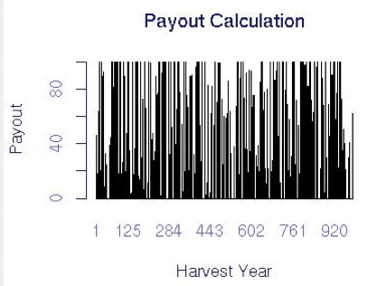

2. WIIET Exercise 2 Answer Key: Influence of Short Datasets on Prices (Advanced Exercise)
2.1. Task 2: Thinking about simulated rainfall
Answers
Does the rainfall in years generated by the rainfall simulator have more variation in rainfall than the historical record or less? Why or why not? More, because the simulator expands the variation to reflect statistical uncertainty in climate
2.2. Task 3: Applying a simulated rainfall dataset
Answers:
Over almost 1,000 years, there are many payouts. See the graph below
2.3. Task 4: Historical verses simulated rainfall data
Answers
- Will insurance prices be higher than the risk prices you calculate using WIIET? Higher
- Why or why not? Real prices are negotiated and include additional costs not modelled by WIIET
- What is the purpose of calculating risk prices using WIIET? The purpose of using WIIET for pricing is to learn how changes in risk and analysis approaches influence price.
2.4. Task 5: Risk Pricing
- Risk Pricing for Historical Rainfall (see below table)
- What is the risk premium of the original contract calculated using the historical data? 24.7 or 24%
- What is the average payout? 16.83
- Why is the premium higher than the average payout? Loading/interest on money for payouts
- Risk Pricing for Simulated Rainfall
- Which payout series has a higher risk price? Simulation
- Why? First, because it has additional uncertainty due to statistical climate uncertainty. Second, because it includes potential years that do not exist in the historical dataset, but that are likely to occur.
- What is the payout rate for the simulated series (divide the number of payouts by the number of years)? 363/990=36.6%
- Is this higher or lower than the 30% payout rate obtained when using the historical data series? Higher than historical burn payout rate
- Why? For reason from previous question
Advanced Question:
Although the mean payout is higher for the simulated payout series (as would be expected), the variance in the payouts is actually lower. How is this possible and what does it say about the changes in payouts? This means that the index and increased variance in the data interact in such a way that there are fewer full payouts but more small payouts, increasing the mean payout but decreasing the variance.
2.5. Task 6: Length of dataset and risk price of insurance
- Is the payout rate (number of payouts/number of years) for the simulated rainfall series using the recent data series higher or lower than that of the simulated rainfall series using the full set of historical data? Higher (see table below)
- Why? Because the short simulation has additional variation due to the increased statistical uncertainty from the short data series
- Are the mean, variance, and price for the simulated rainfall series using the recent data series higher or lower than that of the simulated rainfall series using the full set of historical data? Higher for all
- Why? Because the short simulation has additional variation due to the increased statistical uncertainty from the short data series
Advanced Task:
Questions:
Can comparison of short and long historical datasets give you the information you got from earlier tasks comparing simulated rainfall? Why or why not? The information problems associated with understanding the climate with a short dataseries are not modelled using historical data; a rainfall simulator is required. Because the data series is so short, results from comparisons will be spurious, driven by the luck of the draw from very few years.

{kind=link}